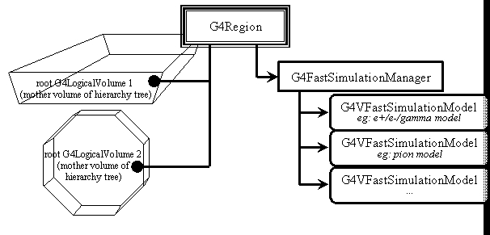

Parameterization
In this section we describe how to use the parameterization or “fast simulation” facilities of Geant4.
Generalities
The Geant4 parameterization facilities allow you to shortcut the detailed tracking in a given volume and for given particle types in order for you to provide your own implementation of the physics and of the detector response.
Parameterisations are bound to a G4Region object, which, in the case of fast simulation is also called an envelope. Prior to release 8.0, parameterisations were bound to a G4LogicalVolume, the root of a volume hierarchy. These root volumes are now attributes of the G4Region. Envelopes often correspond to the volumes of sub-detectors: electromagnetic calorimeters, tracking chambers, etc. With Geant4 it is also possible to define envelopes by overlaying a parallel or “ghost” geometry as discussed in Parameterisation Using Ghost Geometries.
In Geant4, parameterisations have three main features. You must specify:
- the particle types for which your parameterisation is valid;
- the dynamics conditions for which your parameterisation is valid and must be triggered;
- the parameterisation itself: where the primary will be killed or moved, whether or not to create it or create secondaries, etc., and where the detector response will be computed.
Geant4 will message your parameterisation code for each step starting in any root G4LogicalVolume (including daughters. sub-daughters, etc. of this volume) of the G4Region. It will proceed by first asking the available parameterisations for the current particle type if one of them (and only one) wants to issue a trigger. If so it will invoke its parameterisation. In this case, the tracking will not apply physics to the particle in the step. Instead, the UserSteppingAction will be invoked.
Parameterisations look like a “user stepping action” but are more advanced because:
- parameterisation code is messaged only in the G4Region to which it is bound;
- parameterisation code is messaged anywhere in the G4Region , that is, any volume in which the track is located;
- Geant4 will provide information to your parameterisation code about the current root volume of the G4Region in which the track is travelling.
Overview of Parameterisation Components
The Geant4 components which allow the implementation and control of parameterisations are:
G4VFastSimulationModel
- This is the abstract class for the implementation of parameterisations. You must inherit from it to implement your concrete parameterisation model.
G4FastSimulationManager
- The G4VFastSimulationModel objects are attached to the G4Region through a G4FastSimulationManager. This object will manage the list of models and will message them at tracking time.
G4Region/Envelope
- As mentioned before, an envelope in Geant4 is a G4Region. The parameterisation is bound to the G4Region by setting a G4FastSimulationManager pointer to it.
 Fig. shows how the G4VFastSimulationModel and G4FastSimulationManager objects are bound to the G4Region. Then for all root G4LogicalVolume’s held by the G4Region, the fast simulation code is active.
G4FastSimulationManagerProcess
- This is a G4VProcess. It provides the interface between the tracking and the parameterisation. It must be set in the process list of the particles you want to parameterise.
G4GlobalFastSimulationManager
- This a singleton class which provides the management of the G4FastSimulationManager objects and some ghost facilities.
The G4VFastSimulationModel Abstract Class
Constructors
The G4VFastSimulationModel class has two constructors. The second one allows you to get started quickly:
G4VFastSimulationModel(const G4String& aName):
- Here aName identifies the parameterisation model.
G4VFastSimulationModel(const G4String& aName, G4Region*, G4bool IsUnique=false):
- In addition to the model name, this constructor accepts a G4Region pointer. The needed G4FastSimulationManager object is constructed if necessary, passing to it the G4Region pointer and the Boolean value. If it already exists, the model is simply added to this manager. Note that the G4VFastSimulationModel object will not keep track of the G4Region passed in the constructor. The Boolean argument is there for optimization purposes: if you know that the G4Region has a unique root G4LogicalVolume, uniquely placed, you can set the Boolean value to “true”.
Virtual methods
The G4VFastSimulationModel has three pure virtual methods which must be overridden in your concrete class:
G4VFastSimulationModel(const G4String& aName):
- Here aName identifies the parameterisation model.
G4bool ModelTrigger( const G4FastTrack&):
- You must return “true” when the dynamic conditions to trigger your parameterisation are fulfilled. G4FastTrack provides access to the current G4Track, gives simple access to the current root G4LogicalVolume related features (its G4VSolid, and G4AffineTransform references between the global and the root G4LogicalVolume local coordinates systems) and simple access to the position and momentum expressed in the root G4LogicalVolume coordinate system. Using these quantities and the G4VSolid methods, you can for example easily check how far you are from the root G4LogicalVolume boundary.
G4bool IsApplicable(const G4ParticleDefinition&):
- In your implementation, you must return “true” when your model is applicable to the G4ParticleDefinition passed to this method. The G4ParticleDefinition provides all intrinsic particle information (mass, charge, spin, name …).
If you want to implement a model which is valid only for certain particle types, it is recommended for efficiency that you use the static pointer of the corresponding particle classes.
As an example, in a model valid for gammas only, the IsApplicable() method should take the form:
#include "G4Gamma.hh"
G4bool MyGammaModel::IsApplicable(const G4ParticleDefinition& partDef)
{
return &partDef == G4Gamma::GammaDefinition();
}G4bool ModelTrigger(const G4FastTrack&):
- You must return “true” when the dynamic conditions to trigger your parameterisation are fulfilled. The G4FastTrack provides access to the current G4Track, gives simple access to envelope related features (G4LogicalVolume, G4VSolid, and G4AffineTransform references between the global and the envelope local coordinates systems) and simple access to the position and momentum expressed in the envelope coordinate system. Using these quantities and the G4VSolid methods, you can for example easily check how far you are from the envelope boundary.
void DoIt(const G4FastTrack&, G4FastStep&):
- The details of your parameterisation will be implemented in this method. The G4FastTrack reference provides the input information, and the final state of the particles after parameterisation must be returned through the G4FastStep reference. Tracking for the final state particles is requested after your parameterisation has been invoked.
The G4FastSimulationManager Class:
G4FastSimulationManager functionalities regarding the use of ghost volumes are explained in Parameterisation Using Ghost Geometries.
Constructor
G4FastSimulationManager(G4Region *anEnvelope, G4bool IsUnique=false):This is the only constructor. You specify the G4Region by providing its pointer. The G4FastSimulationManager object will bind itself to this G4Region. If you know that this G4Region has a single root G4LogicalVolume, placed only once, you can set the IsUnique boolean to “true” to allow some optimization.
Note that if you choose to use the G4VFastSimulationModel(const G4String&, G4Region*, G4bool) constructor for your model, the G4FastSimulationManager will be constructed using the given G4Region* and G4bool values of the model constructor.
G4VFastSimulationModel object management
The following two methods provide the usual management functions.
void AddFastSimulationModel( G4VFastSimulationModel*)
RemoveFastSimulationModel( G4VFastSimulationModel*)The G4FastSimulationManagerProcess Class
This G4VProcess serves as an interface between the tracking and the parameterisation. At tracking time, it collaborates with the G4FastSimulationManager of the current volume, if any, to allow the models to trigger. If no manager exists or if no model issues a trigger, the tracking goes on normally.
In the present implementation, you must set this process in the G4ProcessManager of the particles you parameterise to enable your parameterisation.
The processes ordering is:
[n-3] ...
[n-2] Multiple Scattering
[n-1] G4FastSimulationManagerProcess
[ n ] G4TransportationThis ordering is important if you use ghost geometries, since the G4FastSimulationManagerProcess will provide navigation in the ghost world to limit the step on ghost boundaries.
The G4FastSimulationManager must be added to the process list of a particle as a continuous and discrete process if you use ghost geometries for this particle. You can add it as a discrete process if you don’t use ghosts.
The following code registers the G4FastSimulationManagerProcess with all the particles as a discrete and continuous process:
void MyPhysicsList::addParameterisation()
{
G4FastSimulationManagerProcess*
theFastSimulationManagerProcess = new G4FastSimulationManagerProcess();
theParticleIterator->reset();
while( (*theParticleIterator)() )
{
G4ParticleDefinition* particle = theParticleIterator->value();
G4ProcessManager* pmanager = particle->GetProcessManager();
pmanager->AddProcess(theFastSimulationManagerProcess, -1, 0, 0);
}
}The G4GlobalFastSimulationManager Singleton Class
This class is a singleton which can be accessed as follows:
#include "G4GlobalFastSimulationManager.hh"
//...
//...
G4GlobalFastSimulationManager* globalFSM;
globalFSM = G4GlobalFastSimulationManager::getGlobalFastSimulationManager();
//...
//...
Presently, you will mainly need to use the GlobalFastSimulationManager if you use ghost geometries.
Parameterisation Using Ghost Geometries
In some cases, volumes of the tracking geometry do not allow envelopes to be defined. This may be the case with a geometry coming from a CAD system. Since such a geometry is flat, a parallel geometry must be used to define the envelopes.
Another interesting case involves defining an envelope which groups the electromagnetic and hadronic calorimeters of a detector into one volume. This may be useful when parameterizing the interaction of charged pions. You will very likely not want electrons to see this envelope, which means that ghost geometries have to be organized by particle flavours.
Using ghost geometries implies some more overhead in the parameterisation mechanism for the particles sensitive to ghosts, since navigation is provided in the ghost geometry by the G4FastSimulationManagerProcess. Usually, however, only a few volumes will be placed in this ghost world, so that the geometry computations will remain rather cheap.
In the existing implementation (temporary implementation with G4Region but before parallel geometry implementation), you may only consider ghost G4Regions with just one root G4LogicalVolume. The G4GlobalFastSimulationManager provides the construction of the ghost geometry by making first an empty “clone” of the world for tracking provided by the construct() method of your G4VUserDetectorConstruction concrete class. You provide the placement of the G4Region root G4LogicalVolume relative to the ghost world coordinates in the G4FastSimulationManager objects. A ghost G4Region is recognized by the fact that its associated G4FastSimulationManager retains a non-empty list of placements.
The G4GlobalFastSimulationManager will then use both those placements and the IsApplicable() methods of the models attached to the G4FastSimulationManager objects to build the flavour-dependent ghost geometries.
Then at the beginning of the tracking of a particle, the appropriate ghost world, if any, will be selected.
The steps required to build one ghost G4Region are:
- built the ghost G4Region : myGhostRegion;
- build the root G4LogicalVolume: myGhostLogical, set it to myGhostRegion;
- build a G4FastSimulationManager object, myGhostFSManager, giving myGhostRegion as argument of the constructor;
give to the G4FastSimulationManager the placement of the myGhostLogical, by invoking for the G4FastSimulationManager method:
- AddGhostPlacement(G4RotationMatrix*, const G4ThreeVector&);
- or:
- AddGhostPlacement(G4Transform3D*);
- where the rotation matrix and translation vector of the 3-D transformation describe the placement relative to the ghost world coordinates.
build your G4VFastSimulationModel objects and add them to the myGhostFSManager. The IsApplicable() methods of your models will be used by the G4GlobalFastSimulationManager to build the ghost geometries corresponding to a given particle type.
- Invoke the G4GlobalFastSimulationManager method:
- G4GlobalFastSimulationManager::getGlobalFastSimulationManager()->CloseFastSimulation();
This last call will cause the G4GlobalFastSimulationManager to build the flavour-dependent ghost geometries. This call must be done before the RunManager closes the geometry. (It is foreseen that the run manager in the future will invoke the CloseFastSimulation() to synchronize properly with the closing of the geometry).
Visualization facilities are provided for ghosts geometries. After the CloseFastSimulation() invocation, it is possible to ask for the drawing of ghosts in an interactive session. The basic commands are:
/vis/draw/Ghosts particle_namewhich makes the drawing of the ghost geometry associated with the particle specified by name in the command line.
/vis/draw/Ghosts- which draws all the ghost geometries.
Gflash Parameterization
This section describes how to use the Gflash library. Gflash is a concrete parameterization which is based on the equations and parameters of the original Gflash package from H1(hep-ex/0001020, Grindhammer & Peters, see physics manual) and uses the “fast simulation” facilities of Geant4 described above. Briefly, whenever a e-/e+ particle enters the calorimeter, it is parameterized if it has a minimum energy and the shower is expected to be contained in the calorimeter (or ” parameterization envelope”). If this is fulfilled the particle is killed, as well as all secondaries, and the energy is deposited according to the Gflash equations. An example, provided in examples/extended/parametrisation/gflash/, shows how to interface Gflash to your application. The simulation time is measured, so the user can immediately see the speed increase resulting from the use of Gflash.
Using the Gflash Parameterisation
To use Gflash “out of the box” the following steps are necessary:
The user must add the fast simulation process to his process manager:
void MyPhysicsList::addParameterisation() { G4FastSimulationManagerProcess* theFastSimulationManagerProcess = new G4FastSimulationManagerProcess(); theParticleIterator->reset(); while( (*theParticleIterator)() ) { G4ParticleDefinition* particle = theParticleIterator->value(); G4ProcessManager* pmanager = particle->GetProcessManager(); pmanager->AddProcess(theFastSimulationManagerProcess, -1, 0, 0); } }The envelope in which the parameterization should be performed must be specified (below: G4Region m_calo_region) and the GFlashShowerModel must be assigned to this region. Furthermore, the classes GFlashParticleBounds (which provides thresholds for the parameterization like minimal energy etc.), GflashHitMaker(a helper class to generate hits in the sensitive detector) and GFlashHomoShowerParamterisation (which does the computations) must be constructed (by the user at the moment) and assigned to the GFlashShowerModel. Please note that at the moment only homogeneous calorimeters are supported.
m_theFastShowerModel = new GFlashShowerModel("fastShowerModel",m_calo_region); m_theParametrisation = new GFlashHomoShowerParamterisation(matManager->getMaterial(mat)); m_theParticleBounds = new GFlashParticleBounds(); m_theHMaker = new GFlashHitMaker(); m_theFastShowerModel->SetParametrisation(*m_theParametrisation); m_theFastShowerModel->SetParticleBounds(*m_theParticleBounds) ; m_theFastShowerModel->SetHitMaker(*m_theHMaker);The user must also set the material of the calorimeter, since the computation depends on the material.
It is mandatory to use G4VGFlashSensitiveDetector as (additional) base class for the sensitive detector.
class ExGflashSensitiveDetector: public G4VSensitiveDetector ,public G4VGFlashSensitiveDetectorHere it is necessary to implement a separate interface, where the GFlash spots are processed.
(ProcessHits(G4GFlashSpot*aSpot ,G4TouchableHistory* ROhist))A separate interface is used, because the Gflash spots naturally contain less information than the full simulation.
Since the parameters in the Gflash package are taken from fits to full simulations with Geant3, some retuning might be necessary for good agreement with Geant4 showers. For experiment-specific geometries some retuning might be necessary anyway. The tuning is quite complicated since there are many parameters (some correlated) and cannot be described here (see again hep-ex/0001020). For brave users the Gflash framework already foresees the possibility of passing a class with the (users) parameters,GVFlashHomoShowerTuning, to the GFlashHomoShowerParamterisation constructor. The default parameters are the original Gflash parameters:
GFlashHomoShowerParameterisation(G4Material * aMat, GVFlashHomoShowerTuning * aPar = 0);Now there is also a preliminary implementation of a parameterization for sampling calorimeters.
The user must specify the active and passive material, as well as the thickness of the active and passive layer.
The sampling structure of the calorimeter is taken into account by using an “effective medium” to compute the shower shape.
All material properties needed are calculated automatically. If tuning is required, the user can pass his own parameter set in the class GFlashSamplingShowerTuning. Here the user can also set his calorimeter resolution.
All in all the constructor looks the following:
GFlashSamplingShowerParamterisation(G4Material * Mat1, G4Material * Mat2,G4double d1,G4double d2, GVFlashSamplingShowerTuning * aPar = 0);An implementation of some tools that should help the user to tune the parameterization is foreseen.